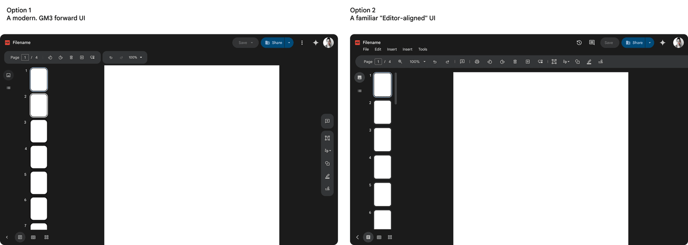
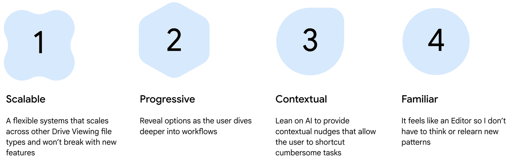
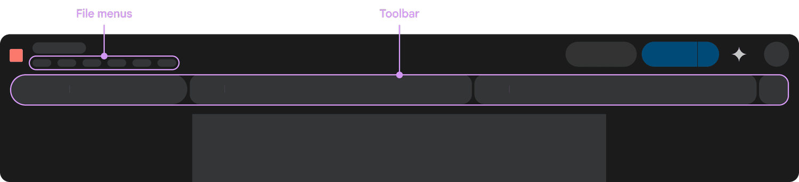
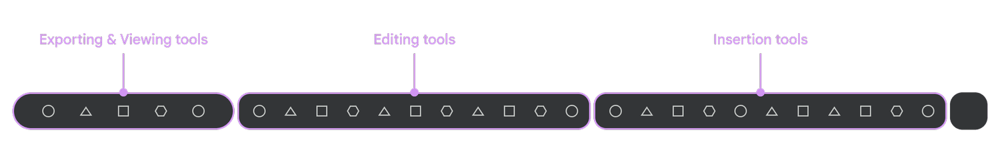
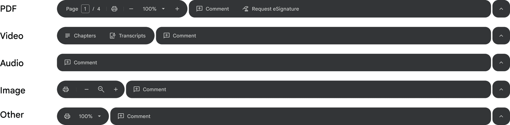
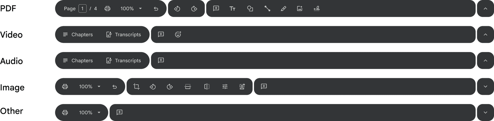
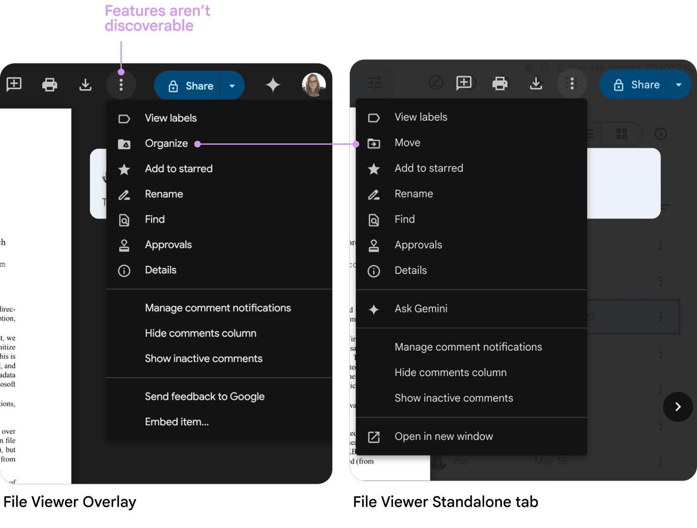

Workspace PDF Improvements
Part of Drive's 2025 strategy was to improve the consumption experience for 3rd party file types, including PDFs. 87% of all files viewed are third-party formats, with PDFs representing 1.7B weekly views.
- Established high-level UX vision for PDF improvements
- Architected scalable information architecture
- Led multidisciplinary design team
- Delivered six major features
- Designed six additional features for future phases
- 1.7 Billion weekly views
- CSAT: Increased satisfaction by +20% to 74%
- DSAT: Decreased dissatisfaction by 7% to 12%


Drive has a long history with PDFs but lacked consequential updates in years. The goal was to add table-stake features: form filling, navigation, editing, and annotation without leaving Drive.
1.7 billion weekly views — 1st most commonly viewed file type across Workspace
Drive is missing table-stake features compared to competitors.

My approach had two parts: information architecture and table-stake features.
Defined taxonomy into categories and insert tools with a team card-sorting exercise, bridging Google Slides patterns with PDF-specific user needs.

Leveraging Workspace precedents for navigation and collaboration; focusing design optimization strictly on viewing and markup toolbar positioning.

Organized alignment session with Google Slides team on unified IA strategy.

Presented two IA options to leadership. Selected Option 2: 'Editor-aligned' system — familiar system will increase adoption.

Defined principles to drive product decisions.

Major advocacy win: unified navigation across all file types in File Viewer (not just PDFs). Standardized menus and toolbars into a scalable framework.

Partnering with Video and eSignature UX leads, I led design convergence of tools into a standardized system — aligning with Workspace design system and leveraging familiar mental models.



- Actions aren't easily discoverable
- Missing features, like Make a copy
- Menus inconsistent across Overlay and Standalone file viewer

Conducted comprehensive audit of File Menu to map cross-surface and file inconsistencies. Established unified taxonomy and standardized groupings, iconography, keyboard shortcuts.


Prioritized ecosystem familiarity over bespoke components. By aligning core interactions with established Workspace and Chrome patterns, we accelerated development while ensuring immediate user proficiency.
- Two page view
- Grid view
- Table of contents
- Thumbnail preview
- Zoom improvements
- Present mode
- Rotate pages
- Rearrange pages
- Join PDF
- Extract PDF
- Markup (text, shape, line, signature)
- Form filling
Created prototype to evaluate opening, navigating, viewing, and editing features.
- 100% task completion across most features
- Issue: Save button was confusing — users expected autosave behavior


Engineering underestimated feature development time due to legacy platform limitations, so we had to reduce scope for MVP.
- Toolbar
- File menus
- Table of contents
- Thumbnail preview
- Zoom improvements
- Standard form filling
Six features launched; unified navigation framework established.
- 1.7B daily views
- Defined information architecture framework
- 6 major features delivered
- CSAT: 20% increase to 74%
- DSAT: 7% decrease to 12%
- UXR — Prasanna Muthukumar
- UX — Zoë Knight, Anh Ton, Lottie Jones